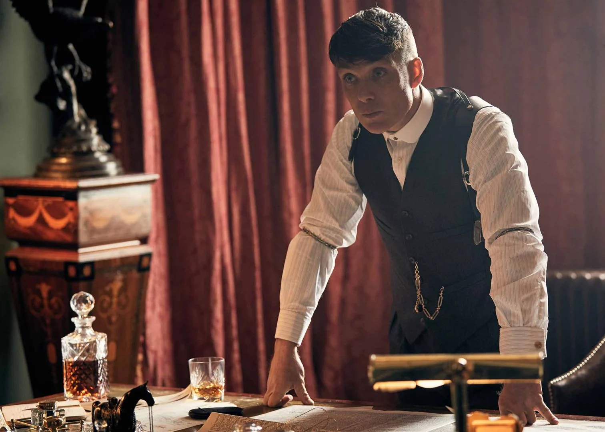
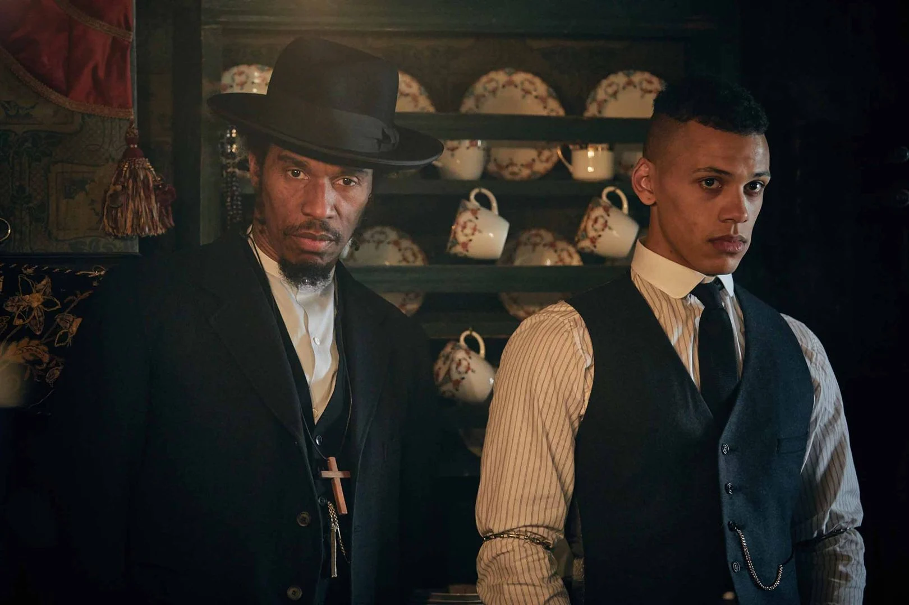
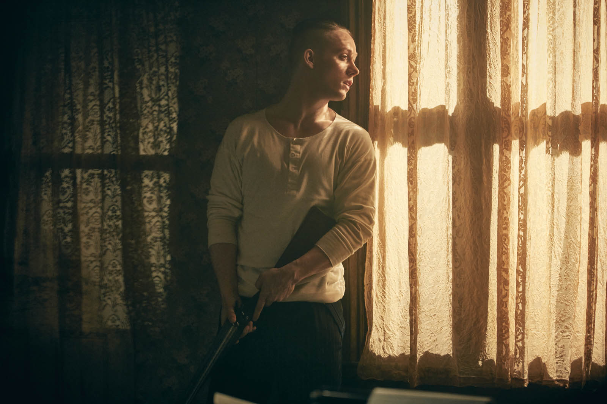

Temporada 4

T4:E1 "A forca"
No Natal de 1925, os integrantes da família Shelby descobrem que a máfia de Nova York está a caminho para vingar os assassinatos que eles cometeram no passado.
T4:E2 "Bárbaros"
Tentando se recuperar das perdas, os Shelby se reúnem em Small Heath, onde Tommy propõe uma trégua para organizar a ofensiva contra a máfia.
T4:E3 "Questão de segurança nacional"
Linda tenta distrair Arthur. Mais tarde, ele acaba caindo em uma emboscada. Tommy se lembra de quem era antes da guerra. Polly encontra um homem de seu passado.

T4:E4 "Perigo à vista"
A máfia tenta atrair um dos Shelby para uma armadilha. Tommy recebe a visita de uma antiga paixão. Lizzie recebe notícias inesperadas.
T4:E5 "À revolução!"
Mesmo em menor número, Tommy inicia um tiroteio com a máfia. Luca Changretta aborda Alfie Solomons. Militares britânicos procuram por Ada.

T4:E6 "À paz!"
Arthur segue seu instinto durante a luta de boxe. Tommy é inspirado pelas sábias palavras de Alfie Solomons e recebe informações importantes de Jessie.